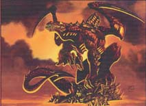

Forums galactiques > Taverne galactique : lieu de discussion informel > Invasion d'un fédéraliste .
Pages : 1
Nadja29/11 ETU 07:19 | Salutations , J'aimerais savoir de combien de croiseur ou chasseur bombardier faut il pour un fédéraliste sans technologies pour envahir une planète vierge . Merci d'avance. |
js1boys scrupule29/11 ETU 07:35 | prend tes kamikases de départ fait une invasion rapide !et t'aura ta planete |
Nadja29/11 ETU 07:37 | Il faut en envoyer combien, 6 ou 10 suffisent ? |
Nadja29/11 ETU 07:50 | Et unr flotte conventionelle de 8 croiseurs et 40 bombardiers , ca a une chance de prendre une planète ? |
yable 29/11 ETU 09:52  | cela dépend du niveau technologique, mais la flotte de base peut prendre une planete vierge facilement. Disons qu'une 20e de chasseurs devraient etre suffisants, et ce nombre va décroitre au fur et a mesure que les technos augmenteront. Pour ma part, je suis alliantiste, et ca m'est arrivé de prendre des planetes vierges avec 10, voir 5 chasseurs, mais j'avais une technologie qui était déjà conséquent. Les kamikazes au début ne sont pas assez nombreux pour prendre une planete. Je crois qu'il en faut une 50e pour ca, mais la j'ai jamais pu vérifier (je n'ai pas acces aux kamikazes) |
Eghinard 29/11 ETU 10:45 | Il est aussi important d'integrer une variable impoderable qui est la defense que possede la planete. Disons qu'a votre niveau je crois qu'avec une 40aine d'unités legeres vous etes assuré de prendre la planete. |
| Ammo  30/11 ETU 00:05 | 2 croisiers et 10 bombardiers pour une planete vierge. |
jolino30/11 ETU 00:13 | Tout dépend des défenses initial de la planète. Voila pourquoi personne dit pareil. A toit de juger! |
Ammo30/11 ETU 00:30 | Peut etre qu'il a raison, mais ca m'a toujours suffit. |
Marx30/11 ETU 15:24 | 3 croiseur 'ont suffit la dernière fois :-p |
Tesclosh 01/12 ETU 13:19 | Je suis commerçant et la premiere planete que j'ai tenté de coloniser a résisté à ma flotte de départ. Depuis j'y vais à au moins dix fregates d'invasions chaque fois. Comme ça je n'ai pas de mauvaises surprises et j'ai toujours des réussites magistrales (doublées de lourdes pertes tout de même). Dans les questions de débutants, il y a deux commandants dans mon secteur qui n'ont rien fait depuis 10-11 jours. Au bout de combien de temps seront ils considerés comme inactif, que je puisse les envahir sans soulever un quelconque mécontentement ? |
Lyckar01/12 ETU 13:23 | 5 chassseurs on suffi et j'ai eu une reussite magistrale donc tu peux voir que ce n'est pas le nombre de chasseur qui compte c'est la maniere de s'en servir... |
Tesclosh01/12 ETU 13:27 | C'est surtout ce qu'il y a en face qui compte. Mais comme mes navettes d'explorations ne sont capable que de me dire s'il fait beau ou moche, je prefere mettre le paquet. |
Lyckar01/12 ETU 13:34 | ayez confiance en vos hommes et fiez vous a votre instinct lors de prochaine attaque et je vous assure que vous n'aurez pas a rougir de vos talents de tacticiens j'en suis sur... mes respects |
Pages : 1
Forums galactiques > Taverne galactique : lieu de discussion informel > Invasion d'un fédéraliste .